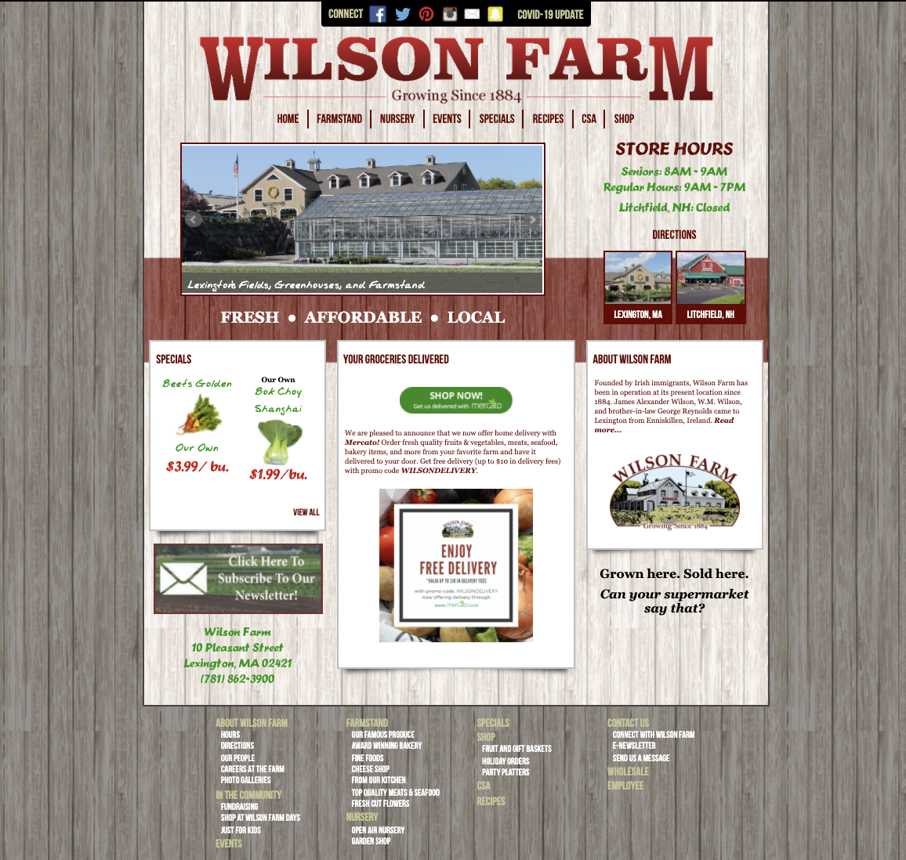
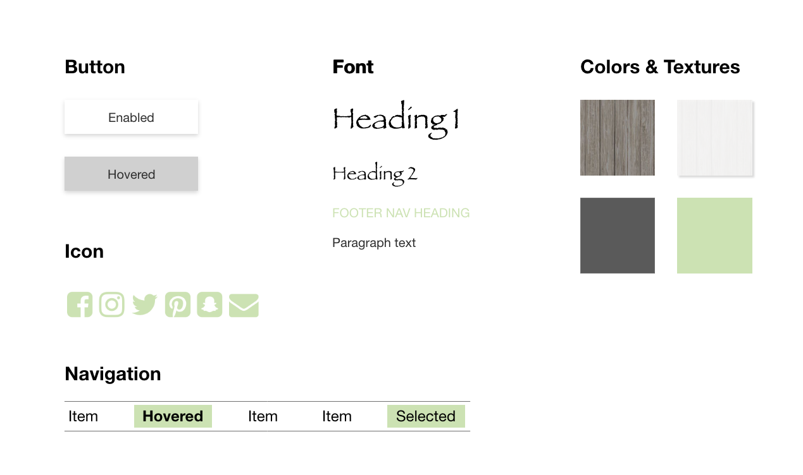
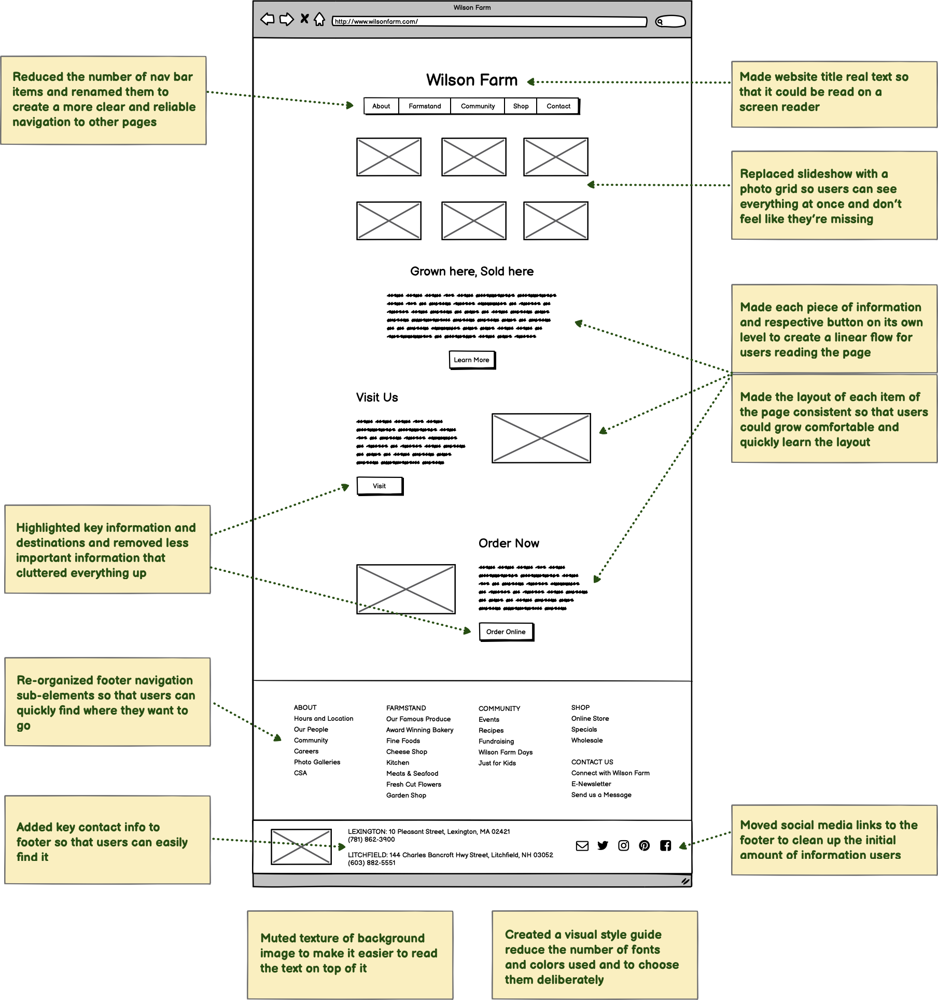
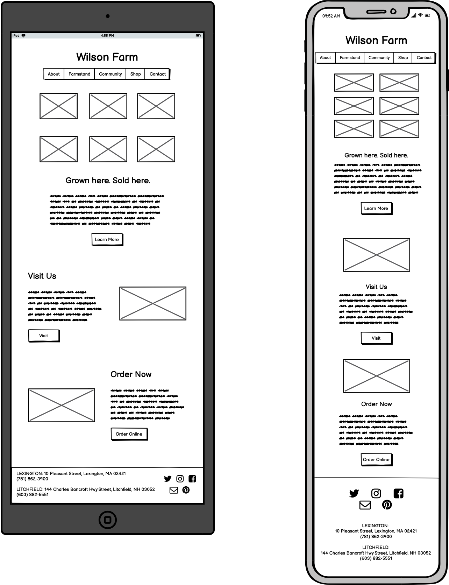
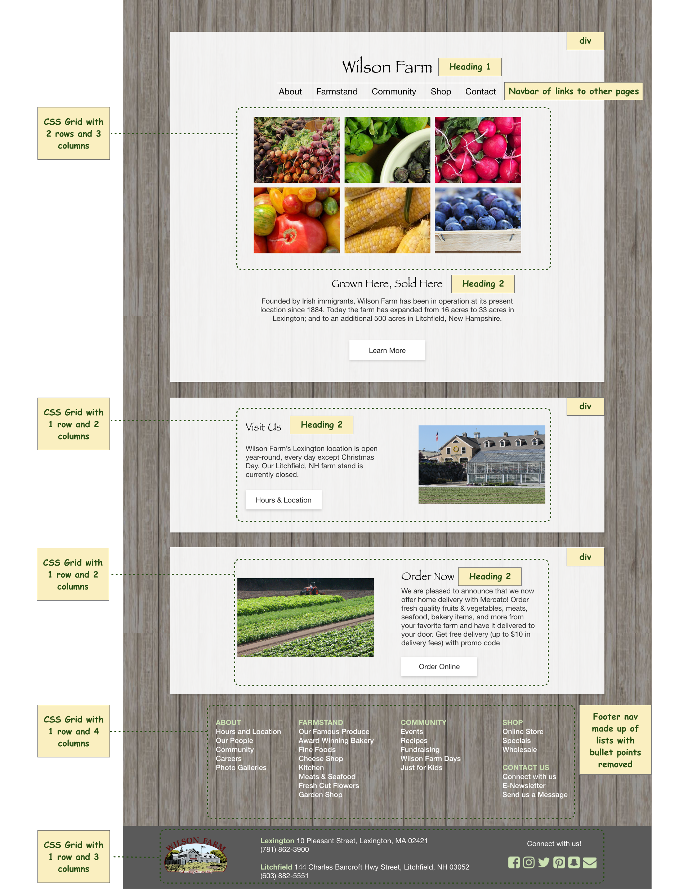
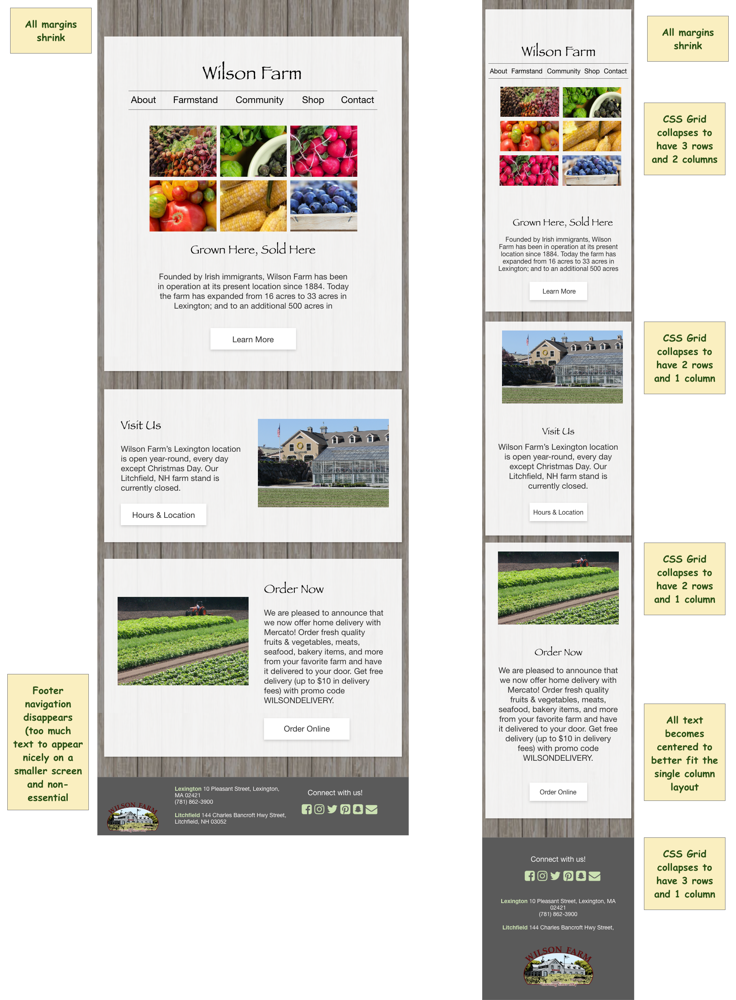

Website Redesign
Wilson Farm
Overview
Wilson Farm is a New England based farm who grows and sells produce locally. Unlike their high-end produce, their website is in need of a tune up. I focused on redesigning their homepage since it is the most heavily trafficked page and carries the most weight in creating a first impression. I first identified current usability and accessibility issues, then prototyped a redesign, and finally coded my redesign as a responsive webpage.
Old design
Below is a screenshot of the old design of Wilson Farm's homepage which I directly addressed in my redesign. You can visit the live version of their current website here.

Usability Redesign
I began by studying the current website, noting issues with its learnability, efficiency, and memorability, and then evaluating its accessibility.
Issues
|
Old site issues |
Redesign improvements |
| Learnability |
- Slideshow contains “ad” for their online delivery that has text: makes it look cluttered and like you’re missing out on important information when the slide changes
- The lack of a consistent layout and inconsistent text hierarchy makes it unclear in what order to traverse the page in
- Navbar at the top of the screen for social media links is distracting from the real navbar below it
|
- Removed slideshow and broadcasted vegetable images with a grid instead so users can see everything at once
- Simplified layout to a grid formation to make it clear what order to read things in
-
Moved social media links to the footer to clean up the initial amount of information users need to take in
|
| Efficiency |
- Too many navbar elements (8) whose names do not clearly indicate what information they link to (i.e. “specials” for what?)
- Hard to navigate to key destinations (i.e. visiting the farm, learning more about the farm, and ordering online)
- Difficult to read text on top of textured background, particularly the green text due to low contrast
- Footer navigation is complex and un-intuitively organized, making it hard to find where you want to go
|
- Reduced number of navbar items and re-named to more clearly indicate where they link to
- Highlighted key destinations on homepage and removed less important information that cluttered everything up
- Added key contact info to footer to make it easy to find
- Muted the texture to make it easier to read the text on top of it
- Re-organized footer navigation sub-elements so that users can more quickly find where they want to go
|
| Memorability |
- Clutteredness makes it hard to remember where things are on the page
- Multitude of colors and fonts makes it hard to makes it visually overwhelming and hard to remember what the element you are looking for looked like
|
- Greatly simplified the layout of the elements on the page
- Created a visual design style guide to intentionally pick a refined set of fonts and colors
|
Accessibility
I used WebAIM WAVE and a screen reader to detect accessibility concerns. The key issues I detected were:
- No alt text for the images (27 examples)
- Missing first level heading (since “Wilson Farm” title is an image)
- No page regions or ARIA landmarks
- Some non-heading text is coded as headings
- Screen reader is extremely confusing because the blocks of information have little order or hierarchy
Visual Style Guide
I created a visual style guide using Adobe XD to determine and document the key visual elements in my redesign. The guide is shown below:

Prototypes
After identifying the key areas for improvement, I brainstormed redesigns for how to address these issues. Once I came up with one I liked, I created low-fi and then hi-fi prototypes for the redesign.
Wireframes
I created wireframe mockups of the homepage for desktop, tablet, and mobile sized windows using Balsamiq and annotated the key design elements and the usability issues they address.
Web

Currently, Wilson Farm's website is not responsive. The wireframes below show how my redesign addresses responsiveness and changes depending on screen size.
Tablet & Mobile

High fidelity mock-ups
I then converted my wireframes into hi-fi mockups using Adobe XD. I annotated the key HTML and CSS elements that would be important when actually coding out the website.
Web

Tablet & Mobile

Developed Site
Finally, I coded my redesign of the homepage using HTML and CSS and used multiple CSS grids to make the page responsive for desktop, tablet, and mobile phone sizes. View the final product here!